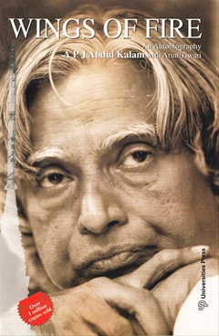

The Da Vinci Code
Author :Dan Brown
Country : United States
Publication date :April 2003
The Da Vinci Code is a 2003 mystery thriller novel by Dan Brown. It is Brown's second novel to include the character Robert Langdon: the first was his 2000 novel Angels & Demons. The Da Vinci Code follows "symbologist" Robert Langdon and cryptologist Sophie Neveu after a murder in the Louvre Museum in Paris causes them to become involved in a battle between the Priory of Sion and Opus Dei over the possibility of Jesus Christ and Mary Magdalene having had a child together.

You Can Heal Your Life
Author:Louise L. Hay
Country: USA
Publication date:January 1, 1984
You Can Heal Your Life is a 1984 self-help and new thought book by Louise L. Hay. It was the second book by the author, after Heal Your Body which she wrote at age 60. After Hay appeared on The Oprah Winfrey Show and Donahue in the same week in March 1988, the book appeared on the New York Times Best Seller list, and by 2008, over 35 million copies worldwide had been sold in over 30 languages, becoming the best-selling non-fiction book of all time.
The Power of Now
Author:Eckhart Tolle
Country:Germany
Publication date:1997
The Power of Now: A Guide to Spiritual Enlightenment is a book by Eckhart Tolle. It presents itself as a discussion about how people interact with themselves and others. The concept of self reflection and presence in the moment are presented along with simple exercises for the achievement of its principles. Published in the late 1990s,the book was recommended by Oprah Winfrey and has been translated into 33 languages.
Inner Engineering: A Yogi's Guide to Joy
Author:Jaggi Vasudev
Country: India
Publication date:September 20, 2016
Inner Engineering: A Yogi's Guide to Joy is a 2016 book authored by an Indian yogi and mystic Jaggi Vasudev. The book was featured among The New York Times Best Seller in the spirituality and self help category for November 2016. The book is intended to be a spiritual guide with practices for personal growth, and also a look at the author's own spiritual journey.

Wings of Fire (autobiography)
Author:A P J Abdul Kalam, Arun Tiwari
Country:India
Publication date:1999
Wings of Fire: An Autobiography of APJ Abdul Kalam (1999), former President of India. It was written by Dr. Abdul Kalam and Arun Tiwari.[1]
Dr. Kalam examines his early life, effort, hardship, fortitude, luck and chance that eventually led him to lead Indian space research, nuclear and missile programs.